Sobre o esporte
O surf é um esporte aquático e estilo de vida originado na Polinésia e popularizado no Havaí, no qual o praticante rema deitado sobre uma prancha para ganhar velocidade, fica em pé (movimento chamado de drop) e desliza pela parede da onda realizando manobras até a beira da praia. Utilizando equipamentos básicos como a prancha adaptada ao tipo de onda, a parafina para dar aderência aos pés, o leash (cordinha de segurança) e, em águas mais geladas, roupas de borracha, a prática une contato intenso com a natureza e técnica. Hoje, além de ser uma atividade recreativa muito popular em todo o litoral brasileiro — especialmente em praias de Santa Catarina —, o surf é um esporte olímpico em que o Brasil se destaca como uma das maiores potências mundiais graças a campeões da chamada Brazilian Storm, como Gabriel Medina, Ítalo Ferreira e Filipe Toledo. O surf é considerado um dos esportes mais emocionates do mundo, oferecendo uma dose única de adrenalina a cada onda surfada de diferentes modos.
Tipos de pranchas
Shortboard (Prancinha)
Curta entre 5'6" a 6'4" pés, leve, bico fino e alta curvatura. Indicada para surfistas intermediários e avançados, que buscam velocidade, agilidade e manobras radicais.
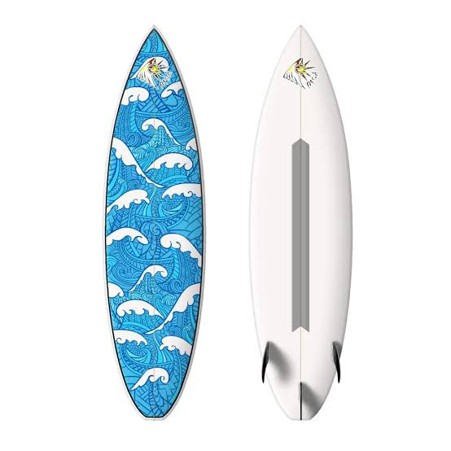
Longboard (Pranchão)
Muito longa, geralmente acima de 9'0" pés, pesada, larga e com bico arredondado. Indicada para para iniciantes pela alta estabilidade e facilidade na remada, surfistas clássicos que gostam de "caminhar" sobre a prancha (o famoso noseriding) utilizam muito ela.
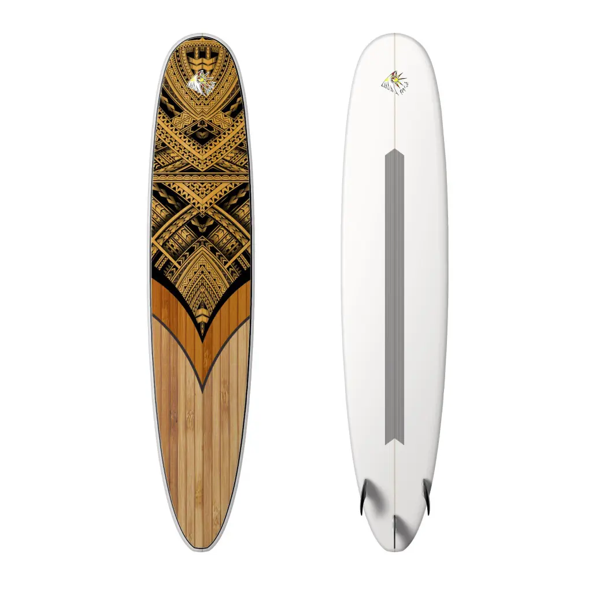
Funboard (Evolution)
Tamanho intermediário, entre 6'8" a 7'0" pés, bico arredondado e bom volume. Indicada para a transição de iniciantes que já conseguem ficar em pé e quem comçar a fazer manobras, mas sem perder a estabilidade como no Longboard.
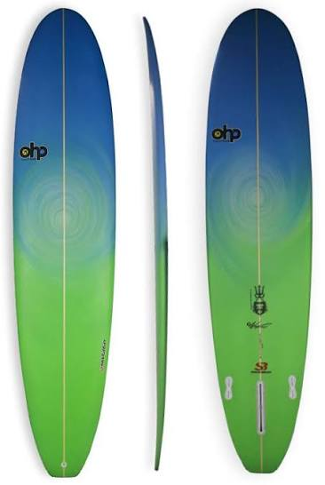
Mais curta e larga do que o shortboard tradicional, com menos curvatura e uma rabeta dividida em duas pontas (as chamadas swallow's). Indicada para surfistas intermediários e avançados em dias de ondas pequenas, fracas ou "gordas", pois gera muita velocidade.
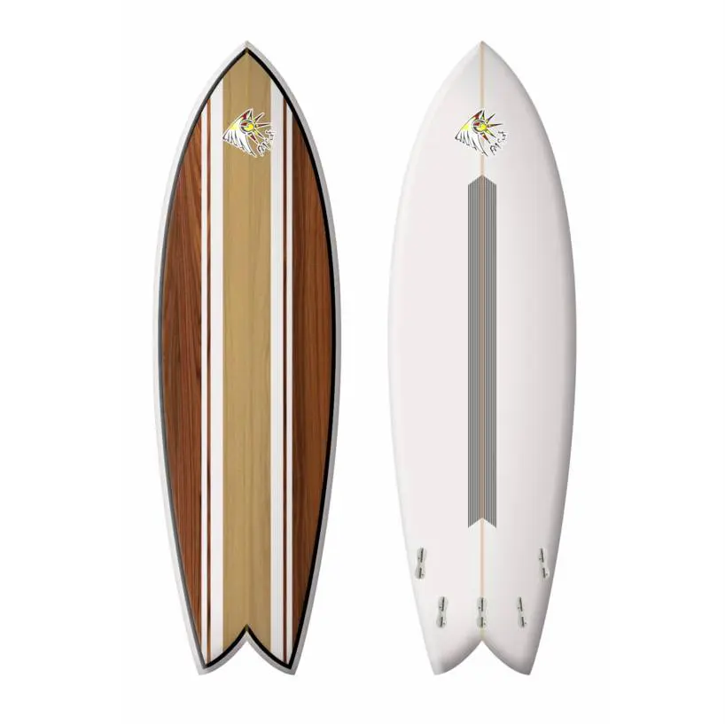
Gun e Semi-Gun
Longas, acima de 7'0" até mais de 10 pés, estreita, com um bico muito fino e uma rabeta afunilada (pin tail). Indicada exclusivamente para surfistas experientes que desejam encarar ondas gigantes e pesadas, assim garantindo estabiliddae em altas velocidades.
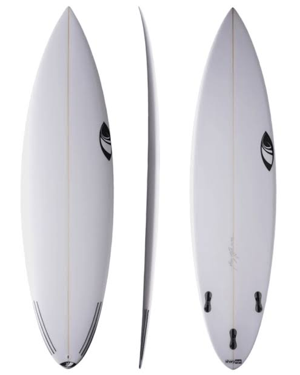
Softboard (Prancha de espuma)
Ela é revestida com material macia (EVA ou espuma de alta densidade) e quilhas felxíveis. Indicada para escolas de surf e iniciantes absolutos, pois reduz drasticamente o risco de impactos e machucandos durante o aprendizado.
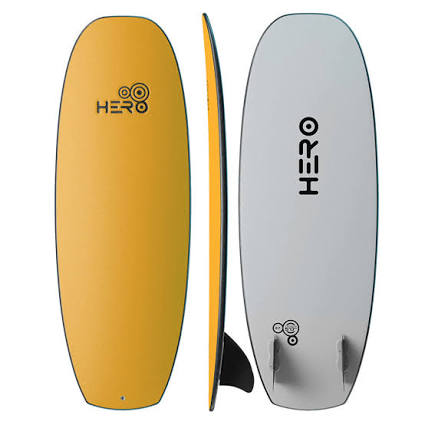
Stand Up Paddle (SUP)
Grande, muito larga e espessa, utilizada em conjunto com um remo longo para uma melhor locomoção dentro da água. Indicada para passeios em águas calmas (rios, lagoas, mar flat), travessias, prática de yoga na água ou até surf emondas suaves e longas (modelos SUP Wave).
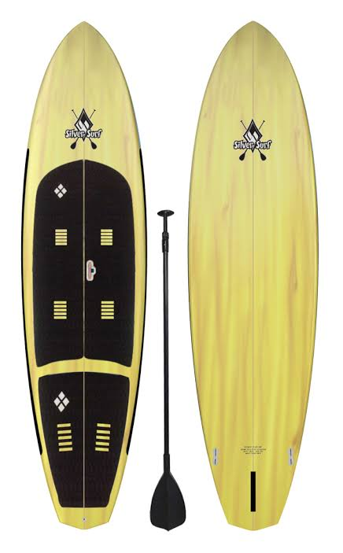
Bodyboard
Curta, possui cerca de 1 metro, feita de espuma sintética e usada com pés de pato. Indicada para praticamente todos os níveis que surfam deitados ou ajoelhados (Dropknee), ideal para pegar tubos e ondas cavadas bem perto da areia.
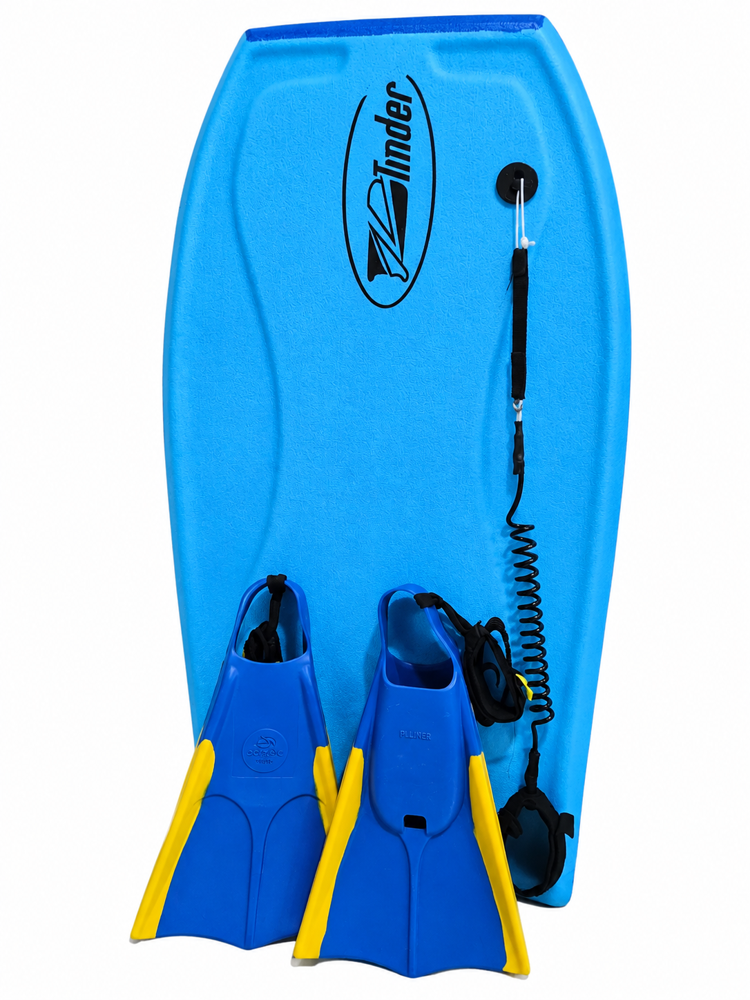
Skimboard (Sonsorial)
Pequena, entre 90cm e 130cm, fina, sem quilhas e geralmente feita de madeira ou fibra. Indicada para surfistas intermediários que buscam algo com facilidade de diversão, já que consiste em jogar a prancha na beira da praia, contendo um filete de água na beira, correr e subir em cima dela.
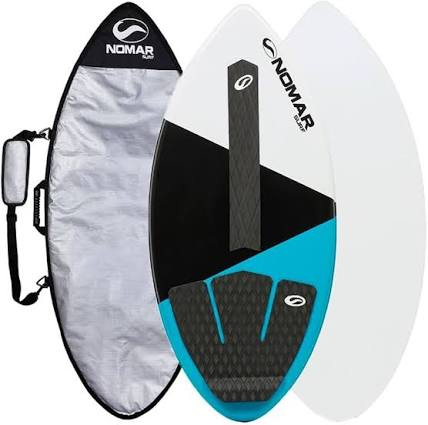
Wakeboard (Kitesurf)
Retangular, simétrica (bidirecional), com botas ou alças fixas para prender os pés. Indicado para qualquer nível de experiência em águas, desde iniciantes até profissionais. O Wakeboard funciona sendo puxado por uma lancha ou cabos, já o Kitesurf funciona com a força do vento através de uma pipa (kite).
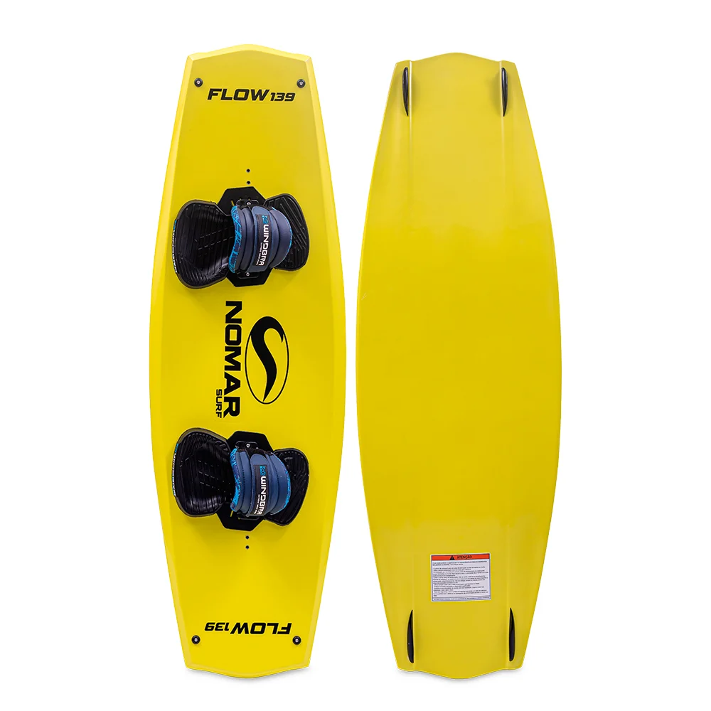
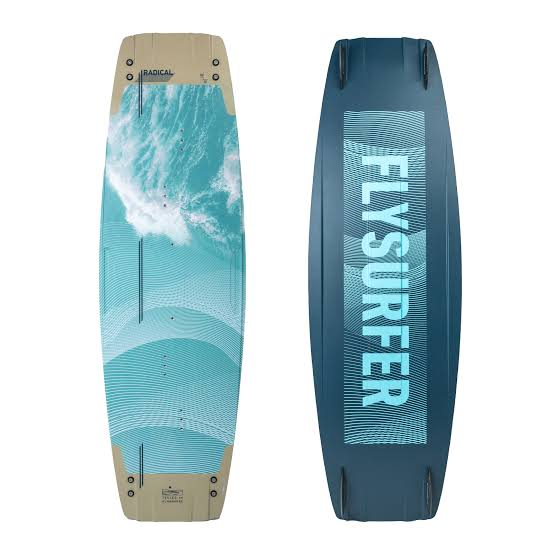
Descubra a litragem ideal da sua prancha
Informe abaixo seu peso e seu nível de experiência para calcular o volume recomendado.